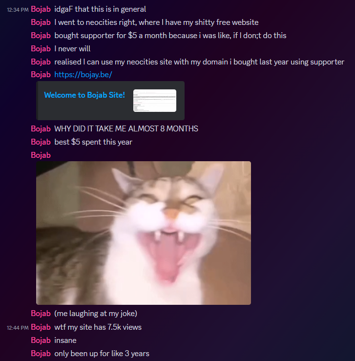

New plans! again..
Welcome! I've finally gotten my domain to work! All thanks to the help of Neocities! Anyway, look forward to me acutally (hopefully) working on this site more often!
Plenty of new hidden audio loop pages will be created now that I can actually share them, and maybe I'll work on some anime list type shite or add videos or... I don't know actually.
All I do know is that bojay.be is now up and running, and I am very happy about it! I look forward to updating you all more!

There are two hidden links on this page, one is directly beside "Now with audio!", one is somewhere else. The one mentioned are the "loops" pages. The one you have yet to find is more personal, so go find it on your own :)
WHAT TO EXPECT:
Don't get your hopes up, I spend more time working on the stupid hidden pages than anything else.
- Guestbook... somehow.
WAY more hidden pages.- Updated About page.
- Soundcloud page.
- Proper Games page.
- Working Discord page.
- Social media links so whoever YOU are can help me with ideas.
Copy-pasted steam page.- It would be awesome to have a donations page but no one will donate so I might make it less obvious.
All the things you see on the list will only be accessable through this page. I will work on this page for links and udate the other pages once I have everything done.